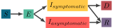
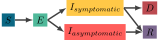
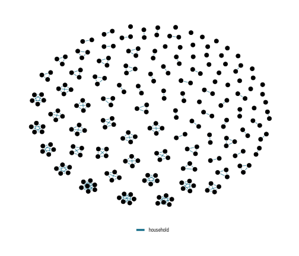
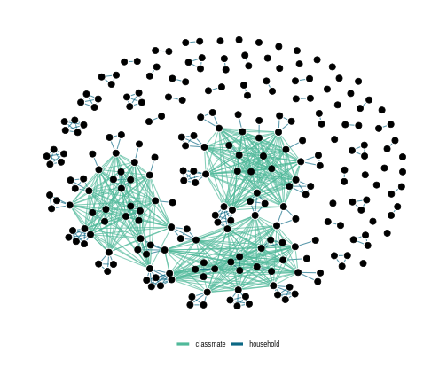

Matt Michalska-Smith

Marie Gilbertson

Lauren White

Meggan Craft

New York Times, April 2020
Network
Disease Model
 

What is contact?

What makes a contact network realistic?
- Home/Family
- School
- Work
- Religious institutions
- Hospitals
- Nuring homes
image adapted from Monroe et al. 2021
Interaction properties
Node properties




Disease Model
What does this look like in a single simulation?